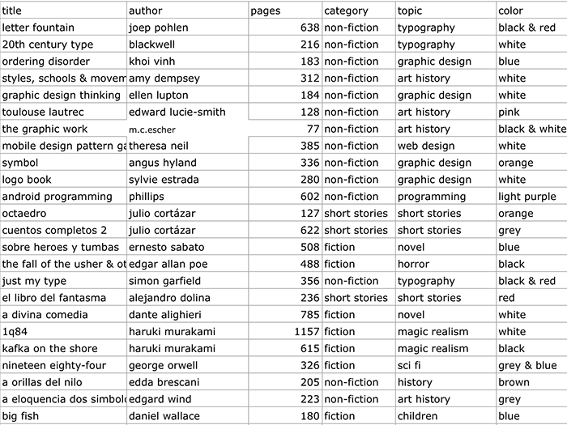

Concept development
The idea
In infographics class, we were asked to make a visual representation of something with personal data. Given my passion of reading, I decided to catalog and record the books that I've read since 1998.
Visual Exploration
To understand the visual dimension of the data, I draw every book as a rectangle, where I represented the cover in an abstract way. Then, I proceeded to organize the data by different categories, such as year, genre, and length of pages.
Design Candidates
The dots represent the books, the size of the dot the length of the book, the color the genre and the position in the circle how much I liked it.
This circle shows how many pages I read from each category per year, showing an evolution in reading habits.
Technology
SVG
Because my graphic consists on such complex polar coordinates, I decided to export svg from Illustrator, which means a crisp image at any size and the ability to manipulate the shape with code.
D3.JS
To create the animations and hover effects, I used the JavaScript library d3.js. In a future, I plan to extend this project to use more d3 and less svg.